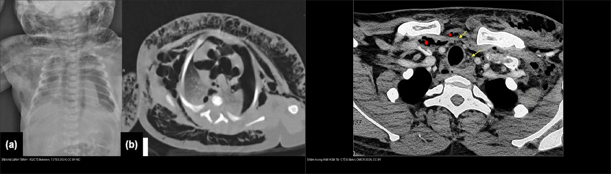
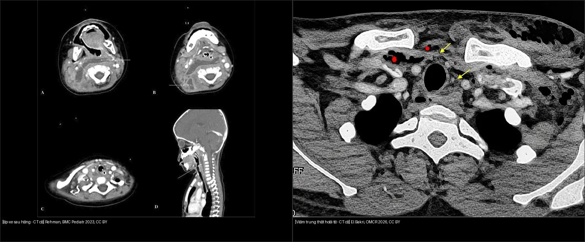
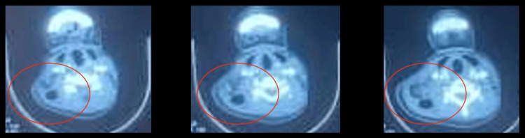
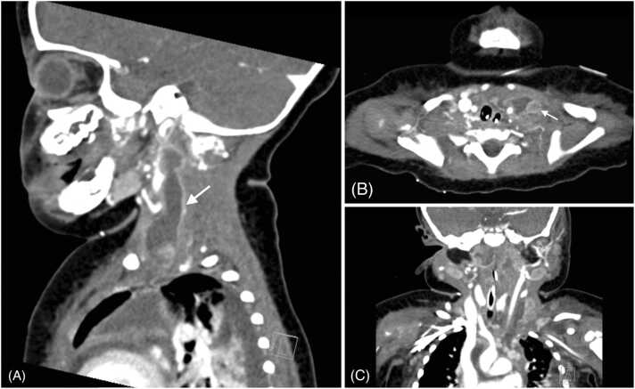
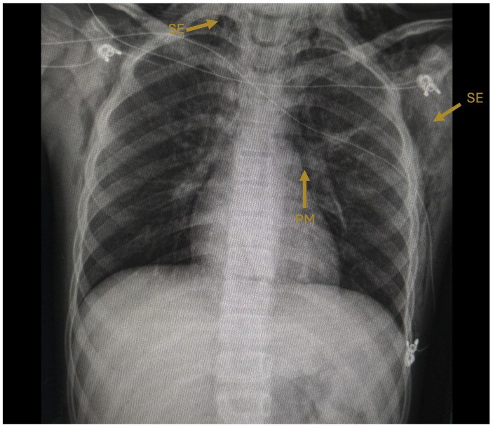
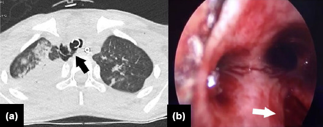
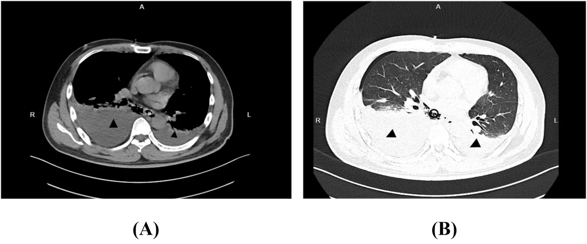
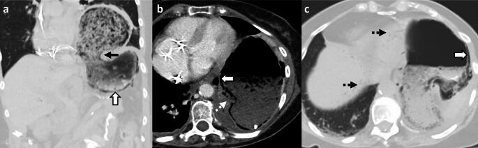

649 — Tràn khí dưới da & khí trung thất ở trẻ: rò khí lành tính từ phổi vs viêm trung thất HOẠI TỬ vs nhiễm khuẩn sinh khí / Subcutaneous & mediastinal gas in children — benign air leak vs necrotizing mediastinitis
Tags: pattern:khi-trong-mo-mem pattern:khi-trung-that pattern:vien-trung-that-hoai-tu pattern:ro-khi vung:trung-that vung:co-sau score:Endo score:Guan protocol:CT-co-nguc-can-quang protocol:noi-soi-thuc-quan
Mức chắc chắn (certainty): ca nguyên văn (verbatim case) — neo vào ba ca có hình ảnh: (1) nữ 16 tuổi viêm trung thất hoại tử lan xuống (DNM) từ ổ răng, lan tới thành ngực (Gourti et al., Cureus 2025, PMC11939028); (2) nhũ nhi 11 tháng áp-xe sau họng do S. aureus nhạy methicillin → DNM + Lemierre-like + liệt cơ hoành hai bên (Chandran et al., IDCases 2025, PMC12555890); (3) trẻ 9 tuổi sởi có tràn khí trung thất + khí dưới da + khí phúc mạc tự khỏi (Damián-Negrete et al., Infect Dis Rep 2026, PMC13214823). Bổ sung tổng hợp y văn mở (bảng phân độ Endo/Guan, Boerhaave, viêm dạ dày sinh hơi).
1. Tổng quan bệnh học – cơ chế hình ảnh
- Cùng một hình ảnh "khí trong mô mềm/trung thất" nhưng 4 cơ chế hoàn toàn khác nhau — và xử trí khác nhau một trời một vực:
- Rò khí từ phổi (air leak, cơ chế Macklin) — khí vô khuẩn, tự tiêu, không mổ;
- Thủng thực quản (Boerhaave) — khí + dịch tiêu hóa vào trung thất, cấp cứu ngoại khoa;
- Viêm trung thất hoại tử lan xuống (descending necrotizing mediastinitis, DNM) — nhiễm khuẩn hoại tử từ cổ sâu, tử vong 11–40%;
- Nhiễm khuẩn sinh khí tại tạng (viêm dạ dày sinh hơi, viêm mô tế bào sinh khí, viêm trung thất do vi khuẩn sinh hơi) — khí là sản phẩm lên men + hoại tử mô, không phải khí "đi lạc".
- TẠI SAO thấy được trên hình — vật lý đơn giản: khí cản tia X rất kém → CT ≈ −1000 HU, thấp hơn nhu mô phổi lành (−700 đến −900 HU) và thấp hơn mỡ (−100 HU). Vì vậy "đen tuyệt đối" trên cửa sổ mô mềm; muốn thấy khí kẽ mỏng phải đọc cửa sổ phổi hoặc cửa sổ rộng, nếu chỉ xem cửa sổ mô mềm hẹp sẽ bỏ sót.
- TẠI SAO khí đi được từ cổ xuống trung thất (giải phẫu = bản đồ lan): cổ sâu chia theo mạc cổ — khoảng quanh họng (retropharyngeal), nguy hiểm (danger space), trước khí quản (pretracheal), quanh mạch cảnh (carotid sheath) và sau họng. Ba khoảng sau họng/nguy hiểm thông liên tục xuống trung thất sau (tới ngang T4, nơi mạc dính vào phế quản), còn khoảng trước khí quản chạy xuống trung thất trước. Đây là lý do DNM lan theo giải phẫu, không theo "trọng lực" — và là lý do phân độ Endo/Guan dựa trên khoang bị chiếm.
- TẠI SAO trẻ khác người lớn: mạc cổ ngắn hơn, đường thở tương đối lớn hơn, mô mềm lỏng lẻo → viêm lan nhanh; nguồn hay gặp là áp-xe sau họng/amidal (không phải răng như người lớn); vi khuẩn hay gặp tạp khuẩn + S. aureus. Trẻ nhũ nhi có thể KHÔNG có dấu cổ cứng, nuốt khó, chảy nước miếng — ca 11 tháng chỉ có sốt + suy hô hấp + sốc nhiễm khuẩn (Chandran 2025).
- TẠI SAO nhiễm khuẩn sinh khí lại "đen" hơn khí lành: vi khuẩn lên men đường/axit amin sinh CO₂ + H₂; đồng thời hoại tử mô giải phóng nitơ. Khí này nằm trong thành tạng, kèm thành dày, phù quanh tạng, dịch — khác khí "ngoài lòng" của rò phổi (không viêm quanh, thành mỏng).
- Ngưỡng định lượng nằm lòng:
- DNM: tử vong 11–40% ở các loạt hiện đại, gộp 19,4% (tổng quan 480 ca); can thiệp lại > 50% ở thể lan rộng; VATS ít biến chứng hơn mở ngực (Ionescu et al., Infect Dis Ther 2026, PMC13476192).
- Boerhaave: ~3,1 ca/triệu dân/năm; trì hoãn > 24 giờ → tử vong > 40%; không điều trị → gần 90% (Han et al., Front Surg 2026, PMC13506687).
- Viêm dạ dày sinh hơi (emphysematous gastritis, EG): 189 ca, tử vong 26,9%; thủng dạ dày OR 6,59; hóa trị OR 5,60; rượu OR 4,16 (Adam et al., Transl Gastroenterol Hepatol 2026, PMC13263973). Trước đây 60–80%, nay < 50% (Panda et al., Abdom Radiol 2025, PMC12830503).
- Khí dạ dày LÀNH TÍNH (benign gastric emphysema): thành dạ dày < 3 mm, KHÔNG viêm quanh dạ dày, bệnh nhân không nhiễm độc, WBC/lactate bình thường (Panda 2025).
- Tràn khí trung thất thứ phát ở trẻ (n = 26): 65% nam; 23/26 điều trị bảo tồn; 6 tử vong (Boleken et al., Ulus Travma Acil Cerrahi Derg 2024, PMC11843381).
2. Mẫu hình + chẩn đoán phân biệt theo cơ chế và vị trí (Gamut)
- Khí LAN THEO MẠCH từ phổi (Macklin) — lành tính: dải khí dọc bó mạch–phế quản, lên trung thất → cổ → dưới da; bệnh nhân tỉnh, không sốc, không đau kiểu xé; khí tự tiêu 2–7 ngày. Gặp sau hen cấp, ho dữ dội, gắng sức, thở máy, sởi (ca 9 tuổi: khí trung thất + dưới da + khí phúc mạc, X-quang ngày 3 gần hết — Damián-Negrete 2026).
- Khí + DỊCH + THÀNH DÀY ở trung thất sau, sau nôn dữ dội (Boerhaave): tam chứng Mackler (nôn – đau ngực dưới – khí dưới da) chỉ có ở thiểu số; hình ảnh then chốt là tràn dịch màng phổi hai bên + khí trung thất + dày thành thực quản + ổ dịch cạnh thực quản, thường lệch bên so với lỗ thủng (ca 36 tuổi: thủng thực quản xa TRÁI nhưng nhiễm bẩn màng phổi HAI BÊN — Han 2026).
- Khí + Ổ DỊCH HOẠI TỬ cổ sâu lan xuống (DNM): khí trong khoang quanh họng/trước khí quản/quanh mạch cảnh, ổ dịch viền ngấm, có bóng khí bên trong, mỡ trung thất thâm nhiễm; bệnh nhân sốt, đau cổ, nuốt đau, cứng cổ, CRP/WBC rất cao; nguồn răng (người lớn) / amidan–sau họng (trẻ). Ca 16 tuổi: WBC 18.000/mm³, CRP 256 mg/L, lan tới nách + thành ngực, 7 ống dẫn lưu Delbet.
- Khí TRONG THÀNH TẠNG (sinh hơi): thành dạ dày/ruột/túi mật/thận có bóng khí dạng bọt/tổ ong, kèm thành dày, phù quanh tạng, dịch, ± khí trong tĩnh mạch cửa (dấu hiệu nặng); bệnh nhân nhiễm độc, đái tháo đường, lactate cao.
- Khí trong mô mềm thành ngực/cổ do viêm cân mạc hoại tử (necrotizing fasciitis): khí dọc theo cân (fascial plane), dày cân + dịch dọc cân, da đỏ tím, đau vượt xa mức sờ thấy, bệnh nhân nhiễm độc nặng; khác khí dưới da "sạch" của rò khí phổi (chỉ có khí, không dịch, không dày cân).
- Khí do can thiệp/thủ thuật (iatrogenic): ngay sau đặt ống ngực bằng trocar, mở khí quản, nhổ răng bằng tay khoan khí nén, nội soi — khí khu trú, không ổ dịch, không thành dày; hỏi diễn tiến thời gian là chìa khóa.
- Mnemonic sàng lọc "GAS-D": Gas-forming infection (sinh hơi), Air leak (Macklin), Surgery/iatrogenic (can thiệp), Disruption of hollow viscus (thủng thực quản/ruột).
3. Bảng so sánh phân biệt (ma trận đối chiếu)
| Thực thể (entity) | Hình ảnh điển hình (CT/X-quang) | Chốt vào (rule-in) | Chốt loại (rule-out) | Gợi ý xác nhận |
|---|---|---|---|---|
| Rò khí phổi lành tính (Macklin) | Khí dọc bó mạch–phế quản, liên tục lên cổ; KHÔNG ổ dịch, KHÔNG thành dày; ± tràn khí màng phổi | Bệnh nhân tỉnh, không nhiễm độc + khí lan theo mạch + tự giảm sau 48–72 giờ | Ổ dịch viền ngấm + khí trong ổ + thành tạng dày → nhiễm khuẩn | X-quang lặp lại 24–48 giờ; CT cửa sổ phổi |
| Boerhaave (thủng thực quản) | Dịch + khí trung thất sau, dày thành thực quản, tràn dịch màng phổi (thường trái, có thể hai bên), ổ dịch cạnh thực quản | Nôn dữ dội rồi đau ngực dưới + khí trung thất + dịch màng phổi | Không có dịch/khí cạnh thực quản, khí chỉ dọc mạch → rò phổi lành | CT cản quang; nuốt cản quang tan trong nước; nội soi thực quản |
| DNM (viêm trung thất hoại tử lan xuống) | Ổ dịch cổ sâu viền ngấm có bóng khí, mỡ trung thất thâm nhiễm, khí trước khí quản/quanh mạch cảnh, lan thành ngực | Sốt + đau cổ/nuốt đau + CRP > 100 mg/L + ổ dịch cổ sâu có khí | Chỉ có khí, không ổ dịch, không viêm mô → rò khí lành | CT cổ–ngực cản quang; cấy máu/dịch; phân độ Endo/Guan |
| Viêm dạ dày sinh hơi (EG) | Khí trong thành dạ dày dạng bọt, thành dày, phù quanh dạ dày, ± khí tĩnh mạch cửa | Bệnh nhân nhiễm độc + đau bụng + lactate cao + thành dày + khí trong thành | Thành < 3 mm, không phù quanh, WBC/lactate bình thường → khí dạ dày lành (BGE) | CT bụng cửa sổ rộng; nội soi sinh thiết/cấy |
| Khí dạ dày lành tính (BGE) | Khí trong thành nhưng thành < 3 mm, không viêm quanh, có thể kèm khí cửa và khí phúc mạc | Không nhiễm độc, WBC/lactate bình thường, sau nội soi/đặt sonde | Sốt + lactate cao + thành dày → EG | Theo dõi 24 giờ + xét nghiệm lặp lại |
| Khí do can thiệp (iatrogenic) | Khí khu trú đúng đường vào, không ổ dịch, không phù lan | Thời điểm khớp thủ thuật + không nhiễm độc | Khí lan xa đường vào + ổ dịch mới → nhiễm khuẩn | So phim trước/sau; hỏi bệnh sử thủ thuật |
| Viêm cân mạc hoại tử sinh khí | Khí dọc cân, dày cân + dịch dọc cân, da đỏ tím, đau không tương xứng | Khí dọc cân + dịch + nhiễm độc nặng + đau vượt mức | Chỉ có khí, không dịch, không dày cân → khí dưới da lành | CT cản quang; mổ thăm dò + cấy (chẩn đoán mô học là chuẩn) |

Ảnh ghép letterbox, giữ nguyên tỉ lệ. Trái: Boleken ME et al., Ulus Travma Acil Cerrahi Derg 2024, CC BY-NC 4.0. Phải: Oxford Med Case Rep 2026 (PMC13612233), CC BY 4.0.
Trái: áp-xe sau họng — ổ dịch viền ngấm sau họng, đẩy thành sau họng ra trước (Rehman AU et al., BMC Pediatr 2023, CC BY 4.0). Phải: DNM — ổ dịch cổ sâu + bóng khí (mũi tên vàng) + khí trong mỡ (dấu sao đỏ) (Oxford Med Case Rep 2026, PMCID PMC13612233, CC BY 4.0).Ba câu hỏi đọc phim theo thứ tự (áp dụng cho MỌI ca khí trung thất)
- Có Ổ DỊCH không? (viền ngấm, có bóng khí bên trong, mỡ quanh thâm nhiễm) — có ổ dịch = nhiễm khuẩn, không phải rò khí đơn thuần.
- Khí nằm trong LÒNG TẠNG hay NGOÀI LÒNG? — khí trong thành dạ dày/ruột = sinh hơi; khí ngoài lòng thực quản = thủng.
- Có DỊCH MÀNG PHỔI / dịch trung thất kèm theo không? — khí + dịch màng phổi sau nôn = Boerhaave cho tới khi loại trừ.
4. Protocol chụp + phân độ + xử trí
- CT cổ–ngực có cản quang (portal venous), lát ≤ 1–2 mm, ĐỌC HAI CỬA SỔ (mô mềm + phổi): đây là "gold standard" cho khí trung thất và ổ dịch cổ sâu; đánh giá từ đáy răng tới cơ hoành (không cắt bớt trường chụp — nguồn ổ răng/amidan hay nằm ngoài vùng ngực). Ca DNM 16 tuổi chỉ lộ lan tới thành ngực/nách khi chụp đủ trường.
- X-quang ngực thẳng + nghiêng: dấu dải khí dọc trung thất, viền khí quanh tim, khí dưới da, dịch màng phổi. X-quang âm tính không loại trừ — tỉ lệ bỏ sót đáng kể, đặc biệt ở trẻ nằm ngửa.
- Nghi Boerhaave: nuốt cản quang tan trong nước (không dùng baryt khi nghi thủng) + nội soi thực quản. Lưu ý cứng: hình ảnh cản quang ÂM TÍNH KHÔNG loại trừ rách sau mổ sửa Boerhaave (Jung et al., J Chest Surg 2026, PMC13256309) — phải phối hợp CT + nội soi.
- Phân độ DNM (dùng để chọn đường dẫn lưu):
| Hệ | Mức | Khoang bị chiếm | Đường tiếp cận |
|---|---|---|---|
| Endo 1999 | I | Trung thất trên, trên carina | Cổ (transcervical) |
| IIA | Trung thất trước dưới | Cổ ± ngực | |
| IIB | Trung thất trước + sau dưới | Ngực (VATS/mở) | |
| Guan 2021 | Ia | Trung thất trước–trên khu trú | Cổ |
| I | Trung thất trước | Cổ/ngực | |
| II | Trung thất sau | Ngực | |
| III | Cả trước và sau | Ngực ± cổ |
- Nguyên tắc xử trí (không thay đổi theo tuổi): kiểm soát nguồn sớm (dẫn lưu cổ + trung thất, cắt lọc hoại tử) + kháng sinh phổ rộng phủ kỵ khí + nuôi dưỡng/ICU + chụp lại theo diễn tiến (can thiệp lại > 50% ở thể nặng). Không có kháng sinh đơn thuần cho DNM có ổ dịch.
- Rò khí lành tính: theo dõi + oxy + giảm áp lực đường thở; không dẫn lưu trung thất, không mổ. Ca sởi 9 tuổi khỏi trong 3 ngày chỉ với điều trị hỗ trợ.
- Flowchart phân nhánh theo cơ chế:
flowchart TD
A["Khí dưới da / khí trung thất trên CT"] --> B{"Có ổ dịch viền ngấm<br/>hoặc khí trong thành tạng?"}
B -->|Không| C{"Khí dọc bó mạch,<br/>bệnh nhân tỉnh?"}
C -->|Có| D["Rò khí lành tính (Macklin)<br/>Theo dõi 24–72 giờ, KHÔNG mổ"]
C -->|Không| E["Tìm nguồn: nội soi/thủ thuật<br/>CT lại khi diễn tiến xấu"]
B -->|Có| F{"Vị trí ổ dịch?"}
F -->|"Cổ sâu → trung thất<br/>+ sốt, CRP cao"| G["DNM: CT cổ–ngực<br/>phân độ Endo/Guan"]
G --> H{"Endo IIB / Guan II–III?"}
H -->|Không| I["Dẫn lưu cổ + kháng sinh phổ rộng"]
H -->|Có| J["Dẫn lưu ngực (VATS) + cổ<br/>+ cắt lọc hoại tử"]
F -->|"Trung thất sau + dịch màng phổi<br/>sau nôn dữ dội"| K["Boerhaave: cản quang tan nước<br/>+ nội soi → sửa/stent/dẫn lưu"]
F -->|"Thành dạ dày/ruột dày + bọt khí<br/>+ lactate cao"| L["Nhiễm khuẩn sinh hơi<br/>kháng sinh + dẫn lưu ± cắt bỏ"]
5. Biến thể bình thường và cạm bẫy
- Cạm bẫy #1 — "khí nhiều = nặng". Lượng khí không tương quan với độ nặng: ca sởi 9 tuổi có khí trung thất + dưới da + phúc mạc mà tự khỏi 3 ngày, trong khi ca DNM có rất ít khí nhưng tử vong cao. Đọc ổ dịch + thành tạng + bối cảnh lâm sàng, không đếm lượng khí.
- Cạm bẫy #2 — bỏ sót ổ dịch vì "chỉ thấy khí". Trên cửa sổ mô mềm hẹp, ổ dịch đồng đậm độ cơ dễ bị đọc là "mô bình thường". Luôn đo đậm độ ổ dịch (dịch đơn thuần 0–20 HU, mủ đặc 20–40 HU), tìm viền ngấm và bóng khí trong ổ.
- Cạm bẫy #3 — khí do chính thủ thuật. Đặt ống dẫn lưu màng phổi bằng trocar gây khí dưới da lan rộng (Jilani et al., Cureus 2024, PMC10849260); nhổ răng bằng tay khoan khí nén gây khí trung thất (Ulloa Luchsinger et al., Cureus 2026, PMC13471718). Hỏi "có thủ thuật gì trong 24 giờ qua?" trước khi gọi là nhiễm khuẩn.
- Cạm bẫy #4 — khí phúc mạc do barotrauma bị mổ bụng oan. Ở trẻ thở máy, khí tự do dưới cơ hoành có thể đi từ trung thất xuống (không thủng ruột); bụng mềm, không phản ứng, không có dịch tự do → không mổ bụng (xem 617).
- Cạm bẫy #5 — "khí trong thành dạ dày" do thức ăn/thức uống. Bọt thức ăn trong lòng dạ dày bắt chước khí trong thành; phân biệt bằng cửa sổ rộng và vị trí khí nằm NGOÀI bờ lòng dạ dày. BGE thật sự có thành < 3 mm và không phù quanh.
- Cạm bẫy #6 — trẻ nhũ nhi "không có dấu cổ điển". Ca 11 tháng không cứng cổ, không chảy nước miếng, không nuốt khó nhưng đã có DNM + Lemierre-like + liệt cơ hoành. Ở nhũ nhi sốt + suy hô hấp + sốc, hạ ngưỡng chụp CT cổ–ngực.
- Biến thể bình thường: khí trong mô mềm cổ sau mở khí quản (khu trú, tự tiêu); khí trong tĩnh mạch do đường truyền (vài bóng nhỏ, không ý nghĩa); khí trong xoang/túi thừa không phải bệnh lý.
6. Tự lượng giá — Blind Quiz ngay trên trang tĩnh
Ca 1 — Nữ 16 tuổi, 1 tuần đau răng, sưng cổ tăng dần, sốt, khó nuốt; CRP 256 mg/L.

- Câu hỏi: ổ dịch nằm ở khoang nào? Có dấu hiệu gì chứng tỏ hoại tử chứ không chỉ là áp-xe đơn thuần? Hai chẩn đoán phân biệt hàng đầu?
Bấm để hiện đáp án (findings + chẩn đoán)
- Findings: ổ dịch cao bên cổ lan xuống dưới, có bóng khí bên trong, không thoát thuốc cản quang (khoanh đỏ) — tức là khí sinh ra trong ổ hoại tử, không phải mạch máu đang chảy.
- Chẩn đoán: viêm trung thất hoại tử lan xuống (DNM) từ ổ răng. Đây là ca có lan tới thành ngực/nách — hiếm, và là lý do phải chụp đủ trường cổ–ngực–thành ngực.
- Vì sao hoại tử: khí + dịch đục + mỡ quanh thâm nhiễm + CRP 256 mg/L; vi khuẩn kỵ khí lên men sinh khí.
- Xử trí: dẫn lưu cổ hai bên + mở trung thất trên + dẫn lưu thành ngực (7 ống Delbet), kháng sinh phổ rộng.
- Nguồn: Gourti M et al., Cureus 2025, PMC11939028, CC BY 4.0.
Ca 2 — Nhũ nhi 11 tháng, sốt 39,5 °C, suy hô hấp, sốc; KHÔNG cứng cổ, KHÔNG chảy nước miếng.

- Câu hỏi: Tổn thương nguyên phát ở đâu? Vì sao trẻ nhũ nhi có thể không có dấu cổ điển? Biến chứng mạch máu nào cần tìm?
Bấm để hiện đáp án
- Findings: ổ dịch viền ngấm lan từ cổ bên trái vào khoảng trước đốt sống và xuống trung thất (mũi tên trắng); mất phân bố mỡ bình thường.
- Chẩn đoán: áp-xe sau họng (RPA) do S. aureus nhạy methicillin → DNM + Lemierre-like (huyết khối tĩnh mạch cảnh trong, dưới đòn, thân tay đầu) + liệt cơ hoành hai bên.
- Vì sao không có dấu cổ điển: mạc cổ ngắn + đường thở lớn tương đối → triệu chứng ưu thế hô hấp; khám cổ có thể bình thường.
- Bài học: nhũ nhi sốt + suy hô hấp + sốc → hạ ngưỡng chụp CT cổ–ngực có cản quang; tìm huyết khối tĩnh mạch lớn và liệt cơ hoành (biến chứng thần kinh hoành).
- Nguồn: Chandran S et al., IDCases 2025, PMC12555890, CC BY-NC-ND 4.0 — ảnh giữ nguyên bản, không cắt/ghép.
Ca 3 — Trẻ 9 tuổi sởi, ho nhiều, đau ngực; X-quang có khí trung thất + khí dưới da.

- Câu hỏi: Cơ chế nào tạo khí? Có cần mổ/dẫn lưu trung thất không? Theo dõi bao lâu?
Bấm để hiện đáp án
- Findings: quầng khí sáng bao quanh bóng tim (tràn khí trung thất) + dải khí trong mô mềm cổ/ngực (khí dưới da); không có ổ dịch.
- Chẩn đoán: hội chứng rò khí do ho dữ dội trong sởi — cơ chế Macklin, khí vô khuẩn.
- Xử trí: hỗ trợ, oxy, theo dõi; KHÔNG dẫn lưu trung thất, KHÔNG mổ. Phim ngày 3 gần như hết.
- Cạm bẫy: khí có thể lan xuống phúc mạc — đừng mổ bụng nếu bụng mềm, không dịch tự do.
- Nguồn: Damián-Negrete RM et al., Infect Dis Rep 2026, PMC13214823, CC BY 4.0.
Ca 4 — Trẻ 7 tuổi ngã, chấn thương ngực; X-quang có khí dưới da lan rộng, CT có khí quanh khí quản; nội soi thấy rách khí quản.

- Câu hỏi: Khí dưới da nhiều có đồng nghĩa tổn thương nặng? Khi nào cần nội soi phế quản?
Bấm để hiện đáp án
- Findings: (a) khí quanh khí quản và trung thất (mũi tên đen), phổi hai bên có đụng dập; (b) nội soi: vết rách thành khí quản (mũi tên trắng).
- Chẩn đoán: rách khí quản do chấn thương — khí dưới da chỉ là dấu hiệu định hướng, chẩn đoán nằm ở nội soi.
- Chỉ định nội soi: khó thở + khí trung thất + không giải thích được bằng rò phổi; trong loạt 26 trẻ, nội soi 6 ca phát hiện 2 rách khí quản (Boleken 2024).
- Nguồn: Boleken ME et al., Ulus Travma Acil Cerrahi Derg 2024, PMC11843381, CC BY-NC 4.0.
Ca 5 — Người lớn trẻ nôn dữ dội sau uống rượu, đau ngực dưới; CT có dịch + khí trung thất.

- Câu hỏi: Chẩn đoán? Vì sao bên tràn dịch không khớp bên lỗ thủng? Xét nghiệm nào cần làm tiếp?
Bấm để hiện đáp án
- Findings: (A) tràn dịch màng phổi hai bên (tam giác đen) + khí trung thất; (B) cửa sổ phổi — dịch đáy phổi hai bên, không có đông đặc thùy.
- Chẩn đoán: Boerhaave (thủng thực quản tự phát) — tam chứng Mackler chỉ gặp ở thiểu số.
- Vì sao lệch bên: dịch tiêu hóa lan qua trung thất rồi vỡ vào màng phổi hai bên, nên bên tràn dịch không phản ánh bên lỗ thủng (ca này thủng thực quản xa trái nhưng nhiễm bẩn hai bên).
- Tiếp theo: cản quang tan trong nước + nội soi để định vị; VATS dẫn lưu/cắt lọc; trì hoãn > 24 giờ làm tử vong > 40%.
- Nguồn: Han J et al., Front Surg 2026, PMC13506687, CC BY 4.0.
Ca 6 — Bệnh nhân đái tháo đường, đau bụng, lactate cao; CT có bọt khí trong thành dạ dày.

- Câu hỏi: Phân biệt khí dạ dày lành tính với viêm dạ dày sinh hơi bằng gì? Điều trị?
Bấm để hiện đáp án
- Findings: khí dạng bọt trong thành dạ dày (mũi tên đen), thành dạ dày dày, khí trong tĩnh mạch cửa (mũi tên đứt nét) — bệnh nhân nhiễm độc, lactate cao.
- Chẩn đoán: viêm dạ dày sinh hơi (emphysematous gastritis) — nhiễm khuẩn sinh khí thật sự của thành dạ dày.
- Chốt loại BGE: thành < 3 mm + không phù quanh dạ dày + WBC/lactate bình thường + không nhiễm độc.
- Điều trị: kháng sinh phổ rộng phủ Gram âm + kỵ khí ± kháng nấm, nhịn ăn, sonde dạ dày, hồi sức; mổ khi thủng (thủng làm tăng tử vong OR 6,59). Tử vong chung 26,9%.
- Nguồn: Panda A et al., Abdom Radiol 2025, PMC12830503, CC BY 4.0.
Bài liên quan chéo
- 600 – Tổng quan Nhi khoa
- 617 – Hội chứng rò khí ở nhũ nhi (tràn khí màng phổi & trung thất)
- 611 – Khí kẽ phổi (PIE) & tràn khí áp lực
- 612 – Cấp cứu đường thở trên trẻ em (áp-xe sau họng, viêm nắp thanh quản)
- 616 – Biến chứng viêm phổi nhi: empyema & hoại tử phổi
- 609 – Ống dẫn lưu màng phổi ở trẻ (biến chứng, khí dưới da do trocar)
- 080 – Chấn thương ngực
Ảnh
- Tên file:
649_slug_Modality_SourceID.jpg(Modality = XQ/CT; SourceID = PMCID). Nguồn + giấy phép từng ảnh trongimages/CREDITS.md. - Ảnh CC BY-NC-ND (
649_DNM-nhu-nhi-11thang_CT_PMC12555890.jpg,649_DNM-nhu-nhi-trung-that_CT_PMC12555890.jpg) giữ nguyên bản — không crop, không ghép. - Không có ảnh nào phải dẫn link vì paywall.
Không dùng để chẩn đoán độc lập khi chưa có người hướng dẫn.